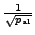
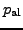

AntiAlC computation depth, p.
parameter: number of iterations used for peak combination testing
default: , where  is the AntiAlC parameter, rounded to the successive integer value
Piet Reegen 2009-09-23